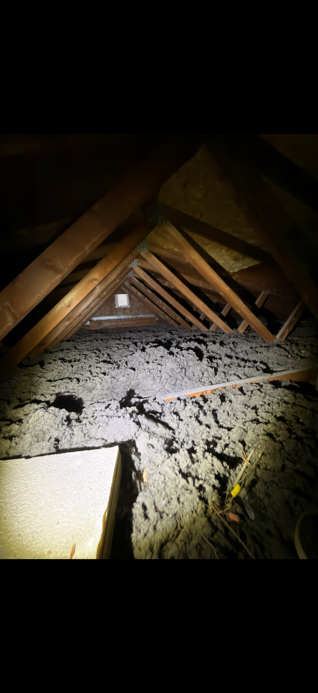
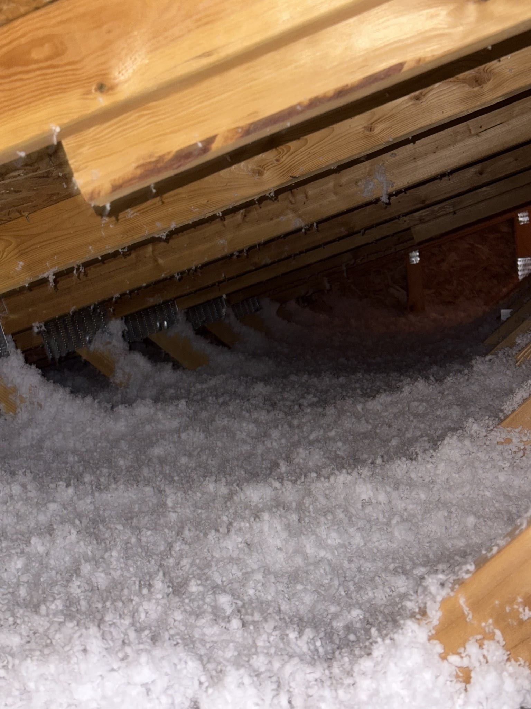
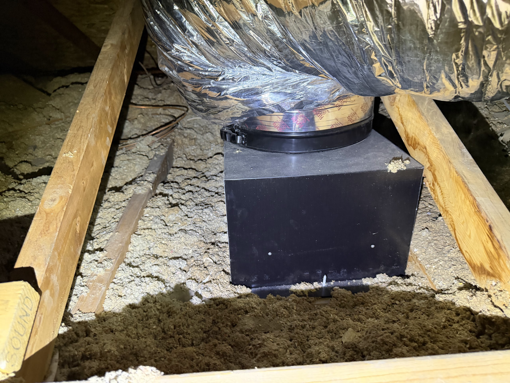
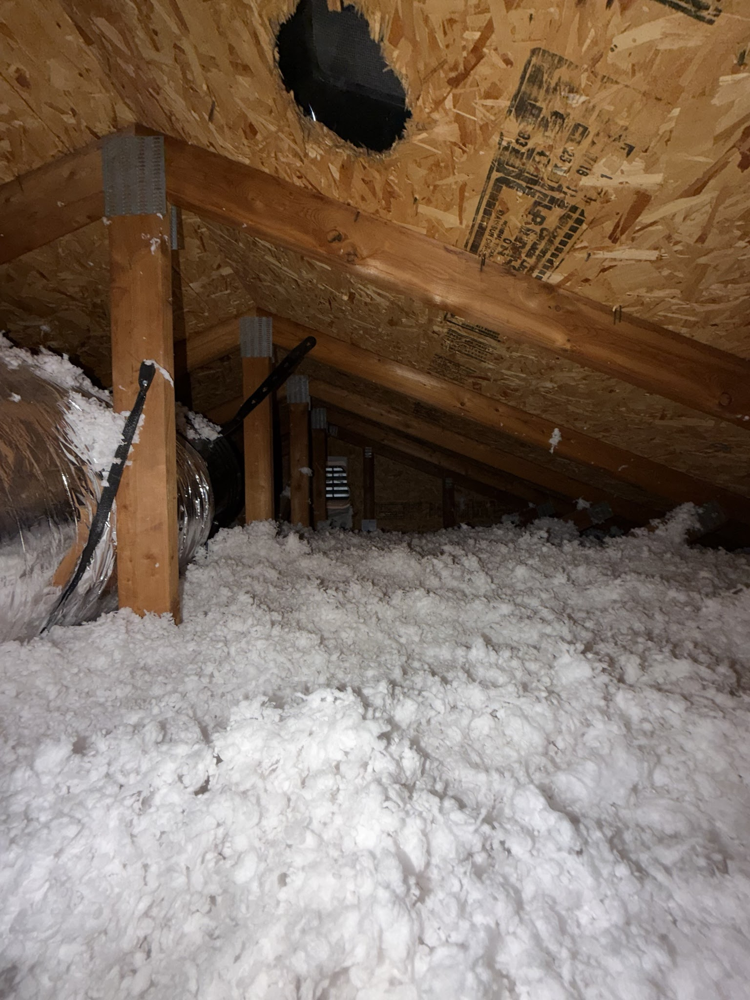
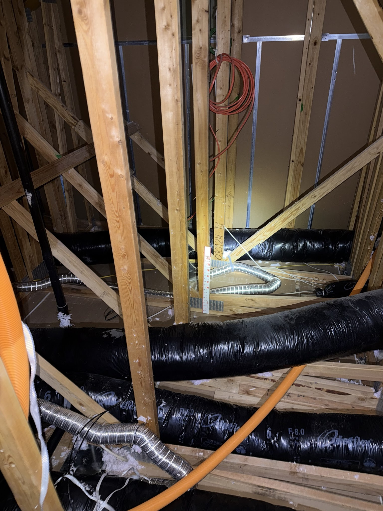
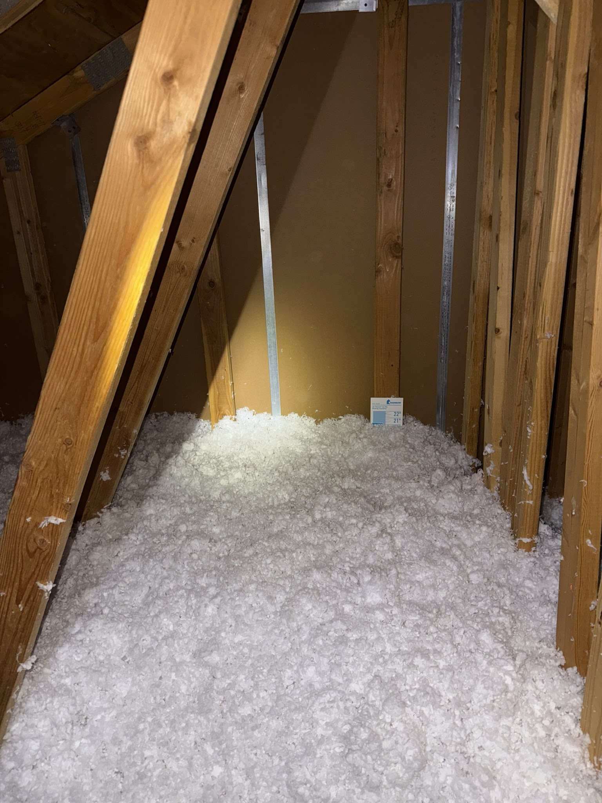

Nesting debris and contamination
Pest activity leaves behind mess, odor, and health concerns that go well beyond the animal itself.
Salt Lake City • Attic Pest Remediation
Get help with rodent-contaminated insulation, nesting debris, attic odors, and attic pest cleanup in Salt Lake City with a restoration plan that finishes the attic properly.
What this service solves
Pest activity leaves behind mess, odor, and health concerns that go well beyond the animal itself.
Rodents and other attic pests can compress, shred, and contaminate insulation across the attic floor.
True remediation means restoring the attic, not just removing what is obviously dirty.
Search intent this page answers
These phrases are worked into the page because they match real homeowner intent, not because every exact phrase belongs in every paragraph.
Rodent damage searches often point to insulation contamination, nesting debris, odors, and droppings that need a cleanup and restoration plan rather than a surface-level fix.
Pest issues, dirty insulation, and attic odors often move the project from simple insulation work into restoration: removal, sanitation, sealing, and rebuilding the attic correctly.
When homeowners search for cleaning attic insulation, the honest answer may be removal and replacement if the material is contaminated, damaged, or no longer safe to keep as the base layer.
Good Attic explains what contamination means, what gets documented, and why the next step depends on the actual attic conditions instead of a generic pest cleanup label.
Attic pest contamination
This section makes the page stronger for rodent attic cleanup, contaminated attic insulation, attic odor, and restoration searches without pretending pest control alone solves the attic.
Salt Lake City attic pest issues often show up as rodent droppings, nesting material, damaged insulation, dusty odor, and insulation that no longer feels safe to keep as the base layer.
Once insulation has been contaminated, compressed, tunneled through, or used for nesting, the better question is whether it is still worth keeping under the rebuilt attic.
Attic smells often come from the material and surfaces left behind after pest activity, which is why remediation should document more than the entry point.
Cleanup into restoration
The honest answer is usually a sequence. The attic has to be cleaned enough, documented enough, and rebuilt carefully enough to stop feeling like a hidden liability.
When affected insulation comes out, the attic can be inspected for hidden bypasses, damaged areas, debris, and conditions that were covered by old material.
A cleaner scope identifies what needs sanitation attention instead of treating the attic like a vague odor problem or a generic insulation job.
After affected insulation is removed, Salt Lake City homes often need sanitation, attic air sealing, and replacement insulation considered together so the attic does not get rebuilt over the same weak points.
Remediation cost drivers
We are keeping this SEO-safe by explaining real scope drivers instead of publishing made-up price ranges before the attic is inspected.
A small isolated area and a broad attic-floor contamination pattern are different scopes, even if both started with the same pest issue.
Tight attic access, deep insulation, multiple layers, nesting debris, odor, and surface conditions all affect how the remediation plan should be built.
Salt Lake City attic pest remediation cost changes with contamination spread, insulation volume, access, odor, debris, and whether the project includes removal, sanitation, sealing, and replacement insulation.
Proof and trust
Pest issue pages need evidence language because homeowners are deciding whether the attic needs a light cleanup or a more complete reset.
Photos, findings, and clear next steps help homeowners understand why a pest-affected attic may need removal, sanitation, sealing, and new insulation rather than a quick surface pass.
Animal exclusion matters, but Good Attic's page should explain the restoration work left inside the attic after the access issue has been handled.
The end goal is an attic the homeowner can believe in again: cleaner, better documented, and ready for a performance-focused rebuild.
City page strategy
The market pest issues page should carry the deeper contamination and restoration explanation. City pages add local proof, reviews, nearby homeowner language, and clean routes back into the remediation scope.
City support page
West Jordan supports the Salt Lake City attic pest issues page with local contamination language, proof, reviews, and nearby homeowner context without replacing the main remediation page.
View city pageCity support page
Sandy supports the Salt Lake City attic pest issues page with local contamination language, proof, reviews, and nearby homeowner context without replacing the main remediation page.
View city pageCity support page
Draper supports the Salt Lake City attic pest issues page with local contamination language, proof, reviews, and nearby homeowner context without replacing the main remediation page.
View city pageCity support page
American Fork supports the Salt Lake City attic pest issues page with local contamination language, proof, reviews, and nearby homeowner context without replacing the main remediation page.
View city pageCity support page
Herriman supports the Salt Lake City attic pest issues page with local contamination language, proof, reviews, and nearby homeowner context without replacing the main remediation page.
View city pageCity support page
Holladay supports the Salt Lake City attic pest issues page with local contamination language, proof, reviews, and nearby homeowner context without replacing the main remediation page.
View city pageCity support page
Millcreek supports the Salt Lake City attic pest issues page with local contamination language, proof, reviews, and nearby homeowner context without replacing the main remediation page.
View city pageCity support page
Cottonwood Heights supports the Salt Lake City attic pest issues page with local contamination language, proof, reviews, and nearby homeowner context without replacing the main remediation page.
View city pageCity support page
Sugar House supports the Salt Lake City attic pest issues page with local contamination language, proof, reviews, and nearby homeowner context without replacing the main remediation page.
View city pageCity support page
South Jordan supports the Salt Lake City attic pest issues page with local contamination language, proof, reviews, and nearby homeowner context without replacing the main remediation page.
View city pageLocal attic patterns
The goal is to explain what is actually happening in attics across Salt Lake City, not just repeat a generic service description.
In Salt Lake City, homeowners often call after pest control or exclusion work is already done, but the attic still contains droppings, nesting debris, odors, and damaged insulation.
What looks like a localized pest issue from the attic hatch can actually affect broad sections of insulation, attic surfaces, and how comfortable the home feels day to day.
A better attic outcome usually comes from removing affected material, sanitizing what needs attention, and rebuilding the attic as a clean system instead of stopping at the mess.
Inspection checkpoints
A stronger recommendation comes from reading the attic correctly first, especially when comfort, contamination, and energy loss are overlapping.
We check whether contamination is isolated or spread across the attic floor, which changes whether targeted cleanup or a broader reset makes more sense.
The attic may need more than insulation removal if debris, odors, or residue are sitting on visible surfaces and penetrations.
If active pest entry or unresolved damage is still present, that affects when the rebuild should happen and what should be coordinated first.
Real remediation means planning for the attic people want after cleanup, not just the attic they can tolerate for now.
Inspection proof
These are the kinds of attic conditions and finish-quality checkpoints the team documents so the recommendation is tied to visible findings instead of generic assumptions.

Good Attic documents how much insulation, debris, and attic surface area in Salt Lake City have actually been affected after pest activity.
The visible mess is not always the full extent of the problem.
Rodent or squirrel activity often leaves behind more than a cleanup problem. It can leave the attic with insulation that is no longer worth saving.
Documentation helps separate exclusion work from real attic restoration.
The attic should feel cleaner, more trustworthy, and better prepared for reinstallation than it did while the contamination was still being tolerated.
A finished remediation scope restores the attic, not just the homeowner's patience.Real project proof
These are real approved before-and-after attic photo sets from this market. The captions keep the claim honest: they document Good Attic's photo-first project standard, while service-specific pages explain how that proof supports the decision process.


Real attic photos from a West Jordan home showing the documented attic condition before work and the finished attic afterward. For attic pest issues, real project proof matters because contamination, odor, cleanup, and insulation replacement should be tied back to visible documented conditions.
Real before/after attic proof

Real attic photos from a Sandy home showing the documented attic condition before work and the finished attic afterward. For attic pest issues, real project proof matters because contamination, odor, cleanup, and insulation replacement should be tied back to visible documented conditions.
Real before/after attic proof

Real attic photos from a Draper home showing the documented attic condition before work and the finished attic afterward. For attic pest issues, real project proof matters because contamination, odor, cleanup, and insulation replacement should be tied back to visible documented conditions.
Real before/after attic proofWhen it fits
If the insulation, air quality, or attic surfaces were affected, cleanup and sanitation deserve a real plan.
Remediation should move the attic from contaminated back to clean, not stop halfway.
Removal, sanitation, sealing, and fresh installation work best when handled as one attic strategy.
Scope decisions
These are the moments where the attic usually needs a broader plan so the homeowner gets a cleaner, more durable result.
Getting the animals out is important, but homeowners usually still need a plan for the insulation, contamination, and attic boundary left behind.
Once damaged material is removed, it is often the right time to tighten the attic boundary and rebuild the insulation layer at the same time.
Half-remediated attics often stay dusty, odorous, or hard to trust. A full reset gives the homeowner a cleaner finish line.
What the scope can include
Good Attic is not trying to oversell the project. The point is to sequence the right work so the attic finishes cleaner and performs better.
The contaminated base layer should be treated as a restoration issue, not ignored because some material still appears intact.
Cleanup should focus on what was impacted so the attic feels healthier and more defensible after the work is done.
Remediation feels complete when the attic is restored into a cleaner, better-performing version of the space.
Nearby cities
These city pages confirm nearby service coverage while keeping the project connected to the right metro team.
Service area
In West Jordan, attic problems often show up as hot second-floor bedrooms, uncomfortable rooms above the garage, and AC systems that seem to run all day in summer. Good Attic helps West Jordan homeowners solve those issues with attic insulation, insulation removal, attic pest remediation, attic fans, and attic air sealing.
View city pageService area
In Sandy, attic issues often show up as upstairs rooms that never feel quite right, winter heat loss that creeps into utility bills, or older attic material that no longer performs the way it should. Good Attic helps Sandy homeowners solve those problems with attic insulation, insulation removal, attic pest remediation, attic fans, and attic air sealing.
View city pageService area
In Draper, homeowners often call when larger homes, broad rooflines, or exposed upper levels make comfort harder to keep consistent from room to room. Good Attic helps Draper homeowners solve those attic-driven issues with attic insulation, insulation removal, attic pest remediation, attic fans, and attic air sealing.
View city pageService area
In American Fork, attic problems often show up as year-round comfort issues, dusty or aging insulation, and utility costs that feel out of step with the home. Good Attic helps American Fork homeowners solve those attic problems with insulation, removal, pest remediation, attic fans, and air sealing.
View city pageRelated services
These related services often come up in the same attic assessment because comfort, cleanup, airflow, and insulation usually overlap.
Related service
Remove compromised attic material so the space can be cleaned up, sealed, and rebuilt the right way.
View related service
Related service
Stop conditioned air from leaking into the attic and dusty attic air from drifting back into the home.
View related service
Related service
Upgrade underperforming attic insulation so the whole home feels steadier, cleaner, and more efficient.
View related serviceApproved review excerpts
Verified customer review
I live up Provo Canyon in a home that’s almost 100 years old that had an attic with old, dirty insulation that mice had gotten into over the years of vacancy that all needed to be cleaned out and new insulation blown back in. Lincoln and his crew Kevin & Josue came come out to tackle the difficult task and did an amazing job and kept a great attitude. These guys also inspected, Sealed unwanted holes, and ran a fogger to sanitize the attic. I can’t thank you enough for the job you guys did, I will most definitely be making referrals and calling you back for other services.
FAQ
Yes. Exclusion solves the animal problem. Attic remediation handles the insulation damage, droppings, nesting debris, and contamination left behind.
Usually not. Insulation removal may be part of the job, but remediation also involves sanitation and the work needed to restore the attic environment.
That is the goal. A well-run remediation project cleans up the damage and sets the attic up for stronger performance moving forward.
Usually, yes. Pest control addresses the animals. Attic remediation handles the damaged insulation, droppings, nesting debris, odor, and restoration work left behind.
Not quite. Removal may be part of it, but real remediation also accounts for contamination, sanitation, and what the attic needs to become healthy and usable again.
Conversion
Use the contact page for a full request or open the quote modal for a quick start. Financing stays linked here because larger attic scopes often need it.
Best next pages
These are the most relevant next pages from here based on the current attic topic, market, or support path.

Best next page
Open Salt Lake City Market Hub for the full local market hub, service pages, city support pages, and the right market contact path.
Open page
Best next page
Review Attic Pest Remediation Services to understand the core attic service path before moving into a local market page.
Open page
Best next page
Use Signs of Attic Pest Contamination as the supporting guide before choosing the next attic service or local market path.
Open page
Best next page
Use When Attic Cleanup Becomes Restoration as the supporting guide before choosing the next attic service or local market path.
Open page